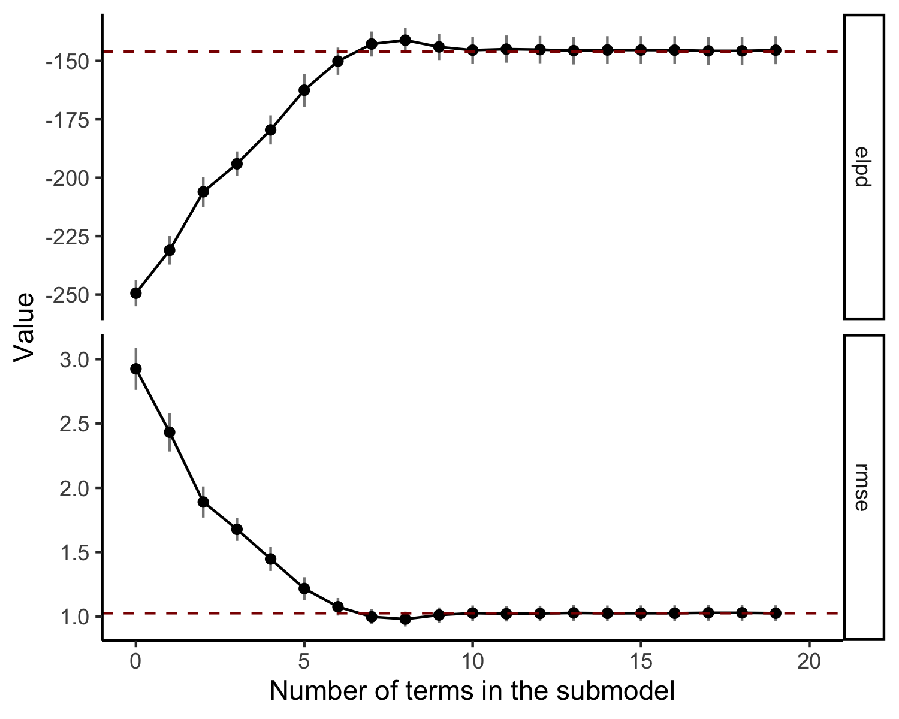
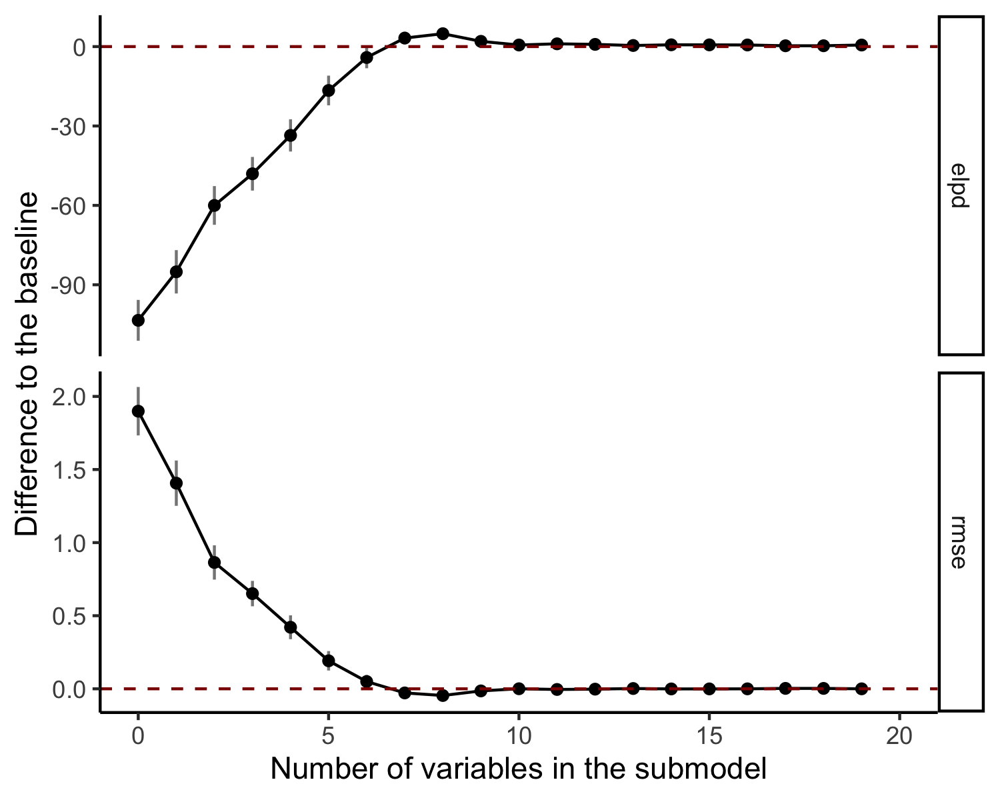
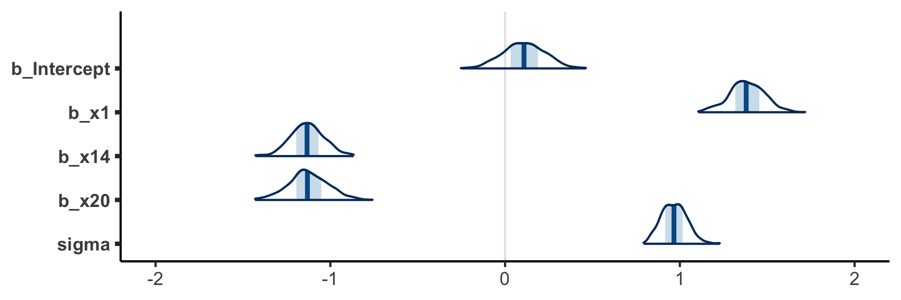
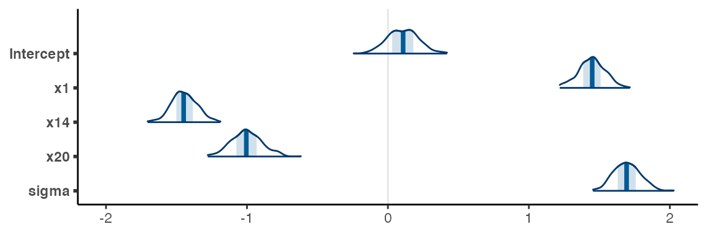
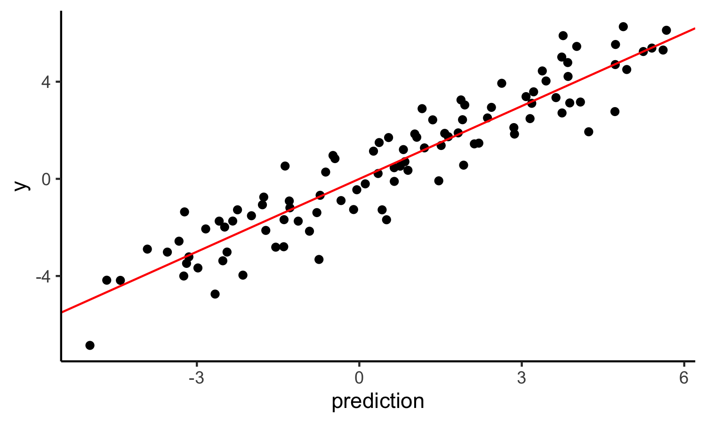
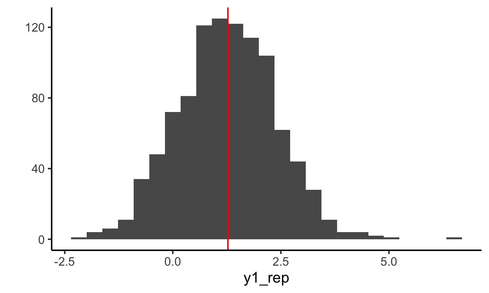

This vignette shows how to use the main functionalities of the projpred-package, which implements the projective variable selection (Goutis and Robert, 1998; Dupuis and Robert, 2003) for generalized linear models. The package is compatible with rstanarm but also other reference models could be used (see section Custom reference models). The methods implemented in the package are described in detail in Piironen et al. (2020) and evaluated in comparison to many other methods in Piironen and Vehtari (2017a).
Load the necessary packages. If the sampling takes more than 10 seconds and multiple cores are available, uncomment the line setting mc.cores to set the number of cores used (this is commented out as the sampling in the example is fast and to avoid possible problems when building the vignette along the package installation in special environments such as computing clusters).
library(brms) library(projpred) library(dplyr) library(ggplot2) library(bayesplot) theme_set(theme_classic()) #options(mc.cores = parallel::detectCores())
The package contains a simple Gaussian example dataset accessible with the data-command. This dataset is one of the example cases from the glmnet-package. The following loads a dataframe df_gaussian with the predictor matrix x and the corresponding targets y into the workspace.
data('df_gaussian', package = 'projpred')
We first construct a model with all the variables and regularized horseshoe prior (Piironen and Vehtari, 2017c) on the regression coefficients. This gives us the full Bayesian solution to the problem. We specify the prior on the number of relevant variables using the approch by Piironen and Vehtari (2017b,c). The prior for the global shrinkage parameter is defined based on the prior on the number of relevant variables.
Before building the model we call break_up_matrix_term. This is a convenience function to automatically split matrix variables in linear terms. For example, in y ~ x, x can be a matrix. If this function is not used, projpred considers x to be jointly included or excluded in the variable selection.
split_structure <- break_up_matrix_term(y ~ x, data = df_gaussian) df_gaussian <- split_structure$data formula <- split_structure$formula d <- df_gaussian n <- nrow(df_gaussian) # 100 D <- ncol(df_gaussian[, -1]) # 20 p0 <- 5 # prior guess for the number of relevant variables tau0 <- p0/(D-p0) * 1/sqrt(n) # scale for tau (notice that stan_glm will automatically scale this by sigma) fit <- brm(formula, family=gaussian(), data=df_gaussian, prior=prior(horseshoe(scale_global = tau0, scale_slab = 1), class=b), ## To make this vignette build fast, we use only 2 chains and ## 500 iterations. In practice, at least 4 chains should be ## used and 2000 iterations might be required for reliable ## inference. seed=1, chains=2, iter=500)
Thanks to its general interface, projpred can be applied to a very wide set of models. To achieve so, we internally define the following set of functions: - Divergence minimizer for the projection, which in this case it simply corresponds to a maximum likelihood estimator. - Prediction function for the projections. - Prediction function for the reference model that outputs the linear predictor. - Function to fetch data from the original dataset.
For most models, projpred is able to generate these itself without any user input more than the reference model object. Nonetheless, for custom or not supported models, the user can provide those themself (more details in the documentation about reference models).
Next we construct the reference model structure refmodel.
refmodel <- get_refmodel(fit)
The function cv_varsel runs a cross-validated variable selection, and returns an object that contains the relevant information about the procedure, such as the ordering of the variables. The search heuristic can be specified by the keyword method. For a simple linear model, the fastest method is to use L1–search, that is the default option. For a more accurate result we recommend running forward search.
vs <- cv_varsel(refmodel, method = "forward")
solution_terms(vs) # selection order of the variables
[1] "x1" "x14" "x20" "x5" "x3" "x6" "x8" "x11" "x10" "x7" "x15" "x13"
[13] "x12" "x4" "x18" "x16" "x2" "x17" "x9" We plot some statistics computed on the training data, such as the sum of log predictive densities (ELPD) and root mean squared error (RMSE) as the function of number of variables added. By default, the statistics are shown on absolute scale, but with deltas=T the plot shows results relative to the full model.

# plot the validation results, this time relative to the full model plot(vs, stats = c('elpd', 'rmse'), deltas = TRUE)

We perform the projection for a submodel of desired size using the function project. The projection can also be coerced to a matrix with draws of the selected variables and sigma. The draws can be visualized with, for example, the mcmc_areas function in the bayesplot package. Below we compare how the projection affects the three most relevant variables.
# Visualise the three most relevant variables in the full model --> mcmc_areas(as.matrix(refmodel$fit), pars = c("b_Intercept", paste0("b_", solution_terms(vs)[1:3]), "sigma")) + coord_cartesian(xlim = c(-2, 2))

# Visualise the projected three most relevant variables proj <- project(vs, nterms = 3, ns = 500) mcmc_areas(as.matrix(proj)) + coord_cartesian(xlim = c(-2, 2))

We make predictions with the projected submodels. For point estimates we can use method proj_linpred. Test inputs can be provided using the keyword newdata. If also the test targets ynew are provided in newdata, then the function evaluates the log predictive density at these points. For instance, the following computes the mean of the predictive distribution and evaluates the log density at the training points using the 6 most relevant variables.
pred <- proj_linpred(vs, newdata = df_gaussian, nterms = 6, integrated = TRUE)
Visualize the predictions
ggplot() + geom_point(aes(x = pred$pred,y = df_gaussian$y)) + geom_abline(slope = 1, color = "red") + labs(x = "prediction", y = "y")

We also obtain draws from the projected predictive distribution. Here’s an example prediction for a random data point using 6 variables (the observed value is marked by the red line)
subset <- df_gaussian %>% dplyr::sample_n(1) y_subset <- subset %>% dplyr::select(y) y1_rep <- proj_predict(vs, newdata = subset, nterms = 6, seed = 7560) qplot(as.vector(y1_rep), bins = 25) + geom_vline(xintercept = as.numeric(y_subset), color = "red") + xlab("y1_rep")

Forward search finds a sparser model with comparable performance to Lasso but starts overfitting when more features are added.
Carvalho, C.M., Polson, N.G., Scott, J.G. (2010). The horseshoe estimator for sparse signals. Biometrika 97(2):465–480.
Dupuis, J. A. and Robert, C. P. (2003). Variable selection in qualitative models via an entropic explanatory power. Journal of Statistical Planning and Inference, 111(1-2):77–94.
Goutis, C. and Robert, C. P. (1998). Model choice in generalised linear models: a Bayesian approach via Kullback–Leibler projections. Biometrika, 85(1):29–37.
Piironen, Juho and Vehtari, Aki (2017a). Comparison of Bayesian predictive methods for model selection. Statistics and Computing 27(3):711-735. DOI 10.1007/s11222-016-9649-y. Online
Piironen, Juho and Vehtari, Aki (2017b). On the Hyperprior Choice for the Global Shrinkage Parameter in the Horseshoe Prior. In Proceedings of the 20th International Conference on Artificial Intelligence and Statistics (AISTATS), PMLR 54:905-913, 2017. Online
Piironen, Juho and Vehtari, Aki (2017c). Sparsity information and regularization in the horseshoe and other shrinkage priors. Electronic Journal of Statistics, 11(2): 5018–5051. Online
Piironen, Juho, Paasiniemi, Markus and Vehtari, Aki (2020). Projective Inference in High-dimensional Problems: Prediction and Feature Selection. Online
Tibshirani, Robert (1996). Regression shrinkage and selection via the Lasso. Journal of the Royal Statistical Society. Series B (Methodological), 58(1):267–288, 1996.
Tran, M.N., Nott, D.J., Leng, C. (2012): The predictive Lasso. Statistics and Computing 22(5):1069-1084.